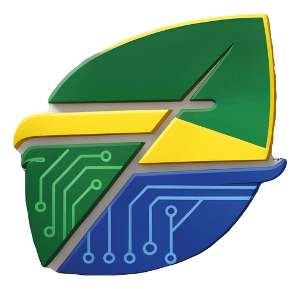

Prazer, Cerrado Tech
A fábrica de software da Cerrado Finanças & Tech.
01 · O que construímos
02 · Integra
SAP®, TOTVS, Power BI, bancos e notas fiscais. Fim da digitação dupla.
03 · Sob medida, do jeito certo
04 · Nasceram aqui

Cerrado TechConte o seu processo e desenhamos a solução com você.
cerradofinancas.com.br/fabrica
WhatsApp (67) 99351-5206